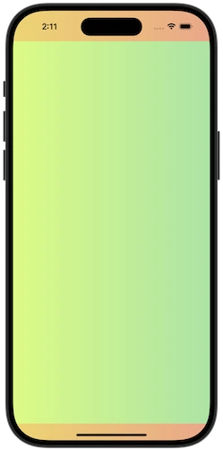
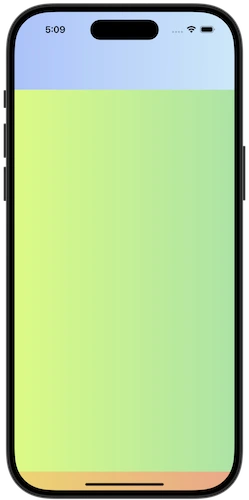

SafeArea QML Type
Provides access to the safe area properties of the item or window. More...
| Import Statement: | import QtQuick |
| Since: | Qt 6.9 |
Properties
- additionalMargins
- additionalMargins.bottom : real
- additionalMargins.left : real
- additionalMargins.right : real
- additionalMargins.top : real
- margins
- margins.bottom : real
- margins.left : real
- margins.right : real
- margins.top : real
Detailed Description
The SafeArea attached type provides information about the areas of an Item or Window where content may risk being overlapped by other UI elements, such as system title bars or status bars.
This information can be used to lay out children of an item within the safe area of the item, while still allowing a background color or effect to span the entire item.
Rectangle { id: parentItem gradient: Gradient.SunnyMorning anchors.fill: parent Rectangle { id: childItem gradient: Gradient.DustyGrass anchors { fill: parent topMargin: parent.SafeArea.margins.top leftMargin: parent.SafeArea.margins.left rightMargin: parent.SafeArea.margins.right bottomMargin: parent.SafeArea.margins.bottom } } } |  |
The SafeArea margins are relative to the item they attach to. If an ancestor item has laid out its children within the safe area margins, any descendant item with its own SafeArea attached will report zero margins, unless additional margins have been added.
Note: An item should not be positioned based on its own safe area, as that would result in a binding loop.
Additional margins
Sometimes an item's layout involves child items that overlap each other, for example in a window with a semi transparent header, where the rest of the window content flows underneath the header.
In this scenario, the item may reflect the header's position and size to the child items via the additionalMargins property.
The additional margins will be added to any margins that the item already picks up from its parent hierarchy (including system margins, such as title bars or status bars), and child items will reflect the combined margins accordingly.
Rectangle { id: parentItem gradient: Gradient.SunnyMorning anchors.fill: parent Rectangle { id: headerItem width: parent.width height: 80 gradient: Gradient.WinterNeva z: 1 } Item { id: contentItem anchors.fill: parent z: 0 SafeArea.additionalMargins.top: headerItem.height - parent.SafeArea.margins.top Rectangle { id: childItem gradient: Gradient.DustyGrass anchors { fill: parent topMargin: parent.SafeArea.margins.top leftMargin: parent.SafeArea.margins.left rightMargin: parent.SafeArea.margins.right bottomMargin: parent.SafeArea.margins.bottom } } } } |  |
In the example above, the header item is positioned at the top of the window, which may potentially overlap with existing safe area margins coming from the window. To account for this we only add additional margins for the part of the header that extends beyond the window's safe area margins.
Note: In this example the header item does not overlap the child item, as the goal is to show how the items are positioned and resized in response to safe area margin changes.
Controls
Applying safe area margins to a Control is straightforward, as Control already offers properties to add padding to the control's content item.
Control { anchors.fill: parent background: Rectangle { gradient: Gradient.SunnyMorning } topPadding: SafeArea.margins.top leftPadding: SafeArea.margins.left rightPadding: SafeArea.margins.right bottomPadding: SafeArea.margins.bottom contentItem: Rectangle { gradient: Gradient.DustyGrass } }
Property Documentation
This property holds the additional safe area margins for the item.
The additional safe area margins can not be negative, and will be automatically clamped to 0.
The resulting safe area margins of the item are the sum of the inherited margins (for example from title bars or status bar) and the additional margins applied to the item.
See also margins.
This property holds the safe area margins, relative to the attached item.
See also additionalMargins.